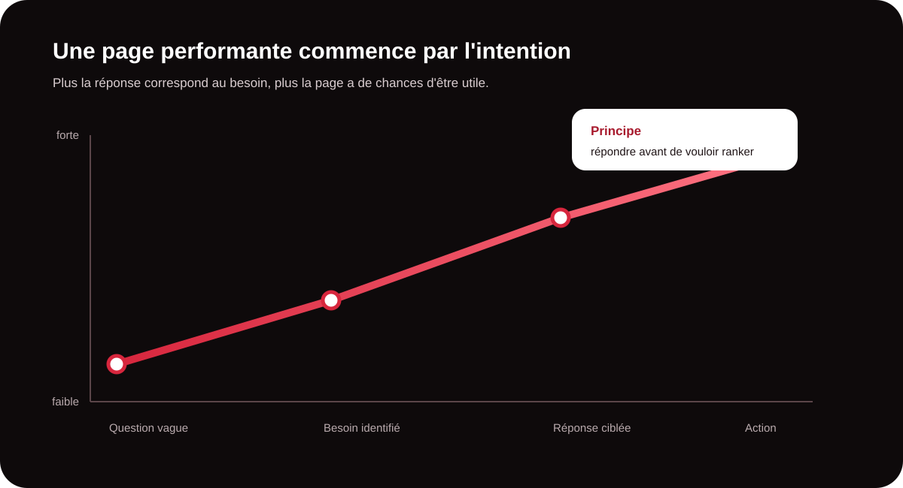
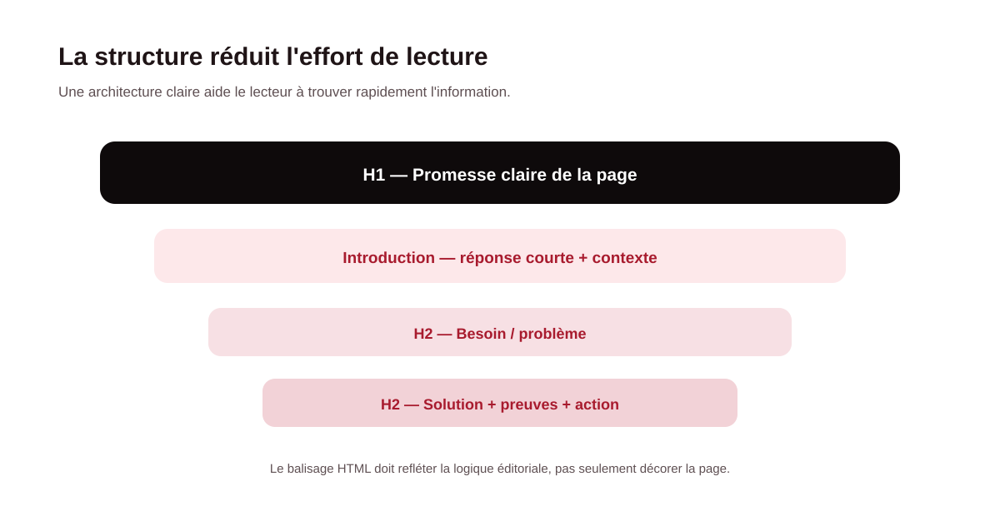
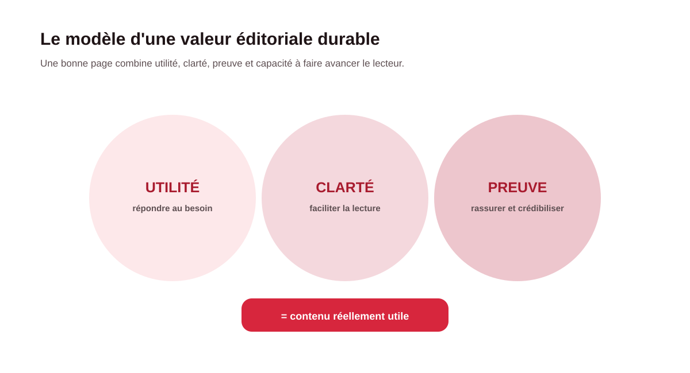

Un contenu SEO efficace commence avant la rédaction. Avant de choisir un mot-clé, il faut comprendre la question réelle du lecteur : cherche-t-il une définition, une méthode, un comparatif, un prestataire ou une solution à un problème précis ? Cette intention guide le format, le niveau de détail et l'appel à l'action. Pour une entreprise, cette démarche permet de produire des pages qui attirent une audience pertinente et qui servent réellement le parcours commercial.

1. Commencer par l'intention de recherche
L'intention de recherche correspond au besoin qui se cache derrière la requête. Une même thématique peut donner lieu à des pages très différentes. Une personne qui tape « SEO » veut peut-être comprendre le sujet ; une personne qui cherche « agence SEO Madagascar » est déjà dans une logique de comparaison ou de prise de contact.
On peut regrouper les intentions en quatre familles : informationnelle (comprendre), navigationnelle (atteindre une marque ou une page), commerciale (comparer avant de choisir) et transactionnelle (passer à l'action). Le contenu doit répondre au bon niveau de maturité.
| Intention | Besoin du lecteur | Format pertinent | Objectif business |
|---|---|---|---|
| Informationnelle | Comprendre un sujet ou résoudre une question. | Guide, tutoriel, définition, FAQ. | Développer la visibilité et l'expertise. |
| Commerciale | Comparer des solutions ou des prestataires. | Comparatif, étude de cas, page expertise. | Créer de la confiance avant le contact. |
| Transactionnelle | Obtenir, acheter ou demander un service. | Page service, offre, landing page. | Convertir une intention en demande. |
| Navigationnelle | Retrouver une entreprise ou une ressource. | Page marque, contact, accès direct. | Faciliter l'accès à l'information. |
2. Construire une structure que l'on comprend en quelques secondes
Un bon article ne doit pas obliger le lecteur à parcourir chaque ligne pour comprendre ce qu'il va obtenir. Le titre principal doit annoncer clairement la promesse. L'introduction doit donner rapidement le contexte et la réponse générale. Les sous-titres doivent ensuite suivre une logique naturelle : problème, explication, méthode, preuves et action.
Utilisez une hiérarchie cohérente avec un seul H1, puis des H2 et H3 organisés selon le contenu. Les paragraphes courts, les listes, les tableaux et les encadrés sont utiles lorsqu'ils rendent une information plus facile à scanner. Cette clarté bénéficie à la fois au lecteur et aux systèmes qui analysent la page.

3. Privilégier la clarté à la sur-optimisation
Le SEO moderne ne consiste pas à répéter une expression cible le plus souvent possible. La priorité est la pertinence sémantique et la qualité de la réponse. Employez le vocabulaire réellement utilisé par votre clientèle, expliquez les termes techniques et évitez les phrases longues lorsque plusieurs idées peuvent être séparées.
Votre mot-clé principal doit apparaître naturellement dans les zones importantes : titre, introduction, sous-titres lorsque cela a du sens, texte et éléments de navigation. Mais surtout, le champ lexical doit refléter le sujet. Une page sur le BPO, par exemple, doit pouvoir parler d'externalisation, de processus, de productivité, de tâches répétitives, de qualité et de pilotage.
Le test simple : si un prospect lit uniquement le titre, l'introduction et les sous-titres, comprend-il déjà la réponse que vous lui proposez ? Si ce n'est pas le cas, la structure mérite probablement d'être retravaillée.
4. Ajouter une vraie valeur ajoutée
Deux pages peuvent traiter exactement le même sujet et pourtant avoir des performances très différentes. La différence vient souvent de la valeur ajoutée : expérience terrain, données propriétaires, exemples, méthode détaillée, cas client, checklist, comparatif ou point de vue d'expert.
Pour MinoSeo, produire un contenu utile signifie notamment partir des problèmes rencontrés par les entreprises. Une page ne doit pas seulement expliquer ce qu'est le SEO ; elle doit aider le lecteur à identifier ses freins, à prioriser ses actions et à comprendre quand l'accompagnement d'une agence devient pertinent.

5. Prouver plutôt que simplement affirmer
Une promesse comme « nous sommes experts » est faible lorsqu'elle n'est accompagnée d'aucun élément concret. Ajoutez des preuves : méthodologie, exemples, chiffres lorsque vous pouvez les documenter, références, cas d'usage, auteur identifié, date de mise à jour ou explication transparente des limites.
Cette approche est particulièrement importante dans une stratégie SEO et GEO. Plus votre contenu permet de comprendre clairement qui parle, sur quel sujet, avec quelle expérience et dans quel contexte, plus il devient utile pour le lecteur et plus votre marque construit un environnement de confiance.
6. Terminer par une action logique
Une page informative n'a pas besoin de pousser immédiatement à l'achat. Elle doit proposer une prochaine étape cohérente avec l'intention. Un guide peut inviter à consulter une page service, à demander un diagnostic, à lire un cas client ou à contacter un expert.
Pour une entreprise qui vend des prestations SEO, la meilleure conversion n'est pas forcément « acheter maintenant ». Il peut s'agir de demander un premier échange pour comprendre les problèmes de visibilité, évaluer le contenu existant et définir les priorités.
7. La checklist avant publication
Avant de mettre une nouvelle page en ligne, vérifiez systématiquement :
- l'intention de recherche est clairement identifiée ;
- le titre annonce précisément la réponse ;
- l'introduction répond rapidement au besoin ;
- les H2 suivent une progression logique ;
- les informations sont concrètes et suffisamment approfondies ;
- les affirmations importantes sont appuyées par des preuves ou expliquées ;
- la page contient des liens internes utiles ;
- l'appel à l'action correspond au niveau de maturité du lecteur ;
- le contenu a été relu pour la clarté, la grammaire et l'expérience mobile.
Conseil MinoSeo : ne demandez pas « combien de mots faut-il ? » en premier. Demandez plutôt « quelle réponse complète notre client attend-il ? ». La longueur doit découler de la profondeur nécessaire pour traiter le sujet, pas d'un quota artificiel.
Conclusion : écrire pour répondre, pas seulement pour se positionner
Un contenu SEO performant est avant tout un contenu utile à une recherche réelle. Comprendre l'intention, structurer la réponse, écrire clairement, apporter des preuves et guider vers une action pertinente sont les réflexes qui transforment une simple page en véritable actif digital.
Pour les entreprises qui souhaitent développer leur visibilité, la stratégie éditoriale doit ensuite s'inscrire dans un ensemble plus large : technique SEO, maillage, autorité, netlinking et optimisation GEO. MinoSeo accompagne cette démarche en partant des besoins concrets de l'entreprise pour construire des contenus utiles, cohérents et orientés performance.
Vos contenus attirent-ils les bons prospects ?
MinoSeo peut analyser vos pages existantes, identifier les intentions insuffisamment couvertes et vous aider à construire une stratégie éditoriale SEO/GEO adaptée à vos objectifs.